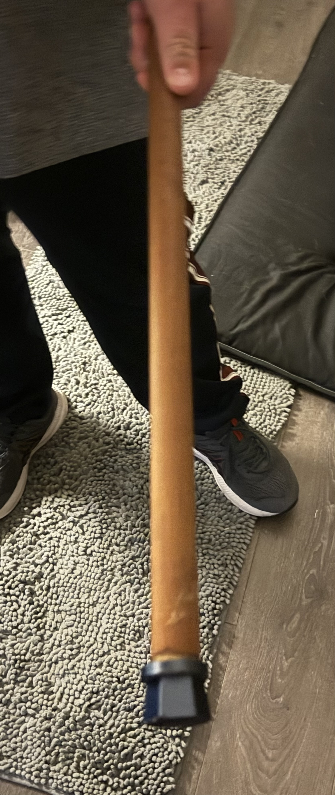
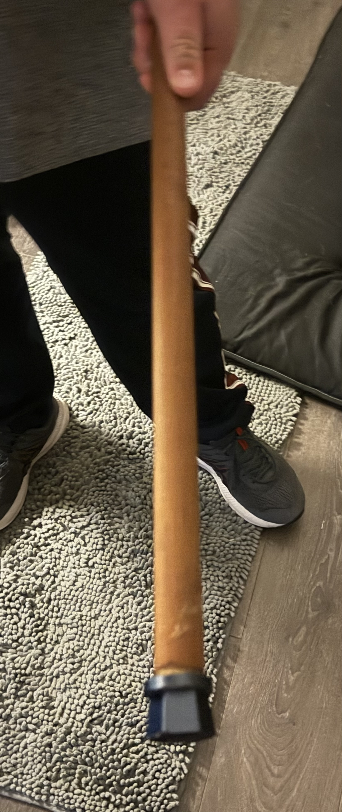

The process of making the cane end included me to first measure the diameter of the bottom of my cane along with measuring the thread by comparing it other threads i did know the size of to figure out which one would fit, then I had to design it in a CAD software named solidworks using the measurements I took. After I designed it I printed it, sanded it down a little and applyeed it to the end of my can